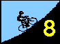
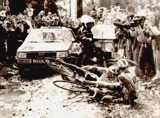
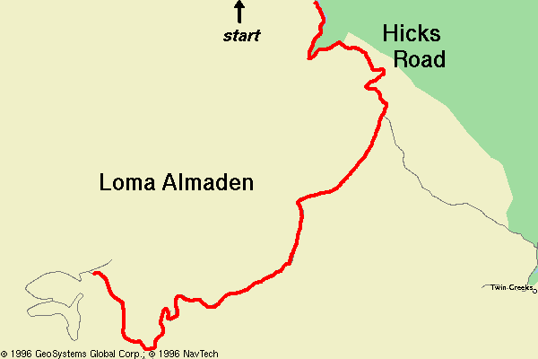

Results are in!!!
Rob Schott's report is in!!!
Special thanks to Ed Miller, data entry specialist for this week!
|
``A Saturday In Hell'' Paris Roubaix... the Hell of the North. The raging peloton blasts over the mud-filled pavé of northern France.... tires slipping on the slick, broken, ancient roads.... another rider is down..... tires designed for more modern surfaces fracture on the disheveled cobbles.... team and media cars careen recklessly past the suffering riders....a war of attrition, mud, and blood. Okay, so Hicks wasn't that bad. Still, recent rains and overcast skies with a noteable lack of road maintenance and two sets of strategically-placed cattle guards conspired to make today's course a bit more challenging than the profile alone promised. Add the road-race-like pack raging over the early miles, local drivers with less than a mother's patience, and conditions were more like "La Pascale" than "La Low-Key". Nevertheless, the hills arrived soon enough, and imposed order on the raging masses. The first slopes, approaching the dam on Hicks at mile 3.0, shred those more "anaerobically challenged" (c'est moi) from the lead group. After 1.6 more miles of frenzied flatlands, the party was over.... the grades of Hicks had arrived. Still, the course had some chaos in reserve -- approximately half way up Hicks' 740 vertical feet, on a section of road worthy of Hicks' 14% average grade, is the first of two cattleguards in today's offering. Most (like TNT's Roxeanne Robinson) ignored their fear, trusted their momentum, and safely crossed. At least one rider (me?) lamely dismounted and slinked across on foot, only to be immediately passed by an entire pack of thicker-skinned participants. Then, Loma Almaden... Less hellish than some had promised, but more challenging than others had claimed ("no worse than Page Mill," Bill "I have a granny gear" Bushnell assured me), it provided a suitable close to the day, as legs softened up by the sustained grades of Hicks were forced to drive on through the mist, feeling all of Loma Almaden's 740 vertical feet. But, by now most of the Low-Key regulars are accustomed to such rigors, and the summit was gained without too much concern. Even Loma Almaden's cattle guard wasn't much of a challenge after the one on Hicks' steeper grade. And so there was a festive air at the finish, as riders knew the worst of the 1996 Low-Key Hillclimbs was behind them. Only Hamilton remained. Hamilton, with more than twice the climbing of H-LA, is much more leisurely in its attainment. Those who have survived so far know it will be conquered, and thus can savor the experience. It will be a good Thanksgiving... Some notes for this week:
|
|
Video Info of Team TNT added more to his video begun on On Orbit Drive, catching riders as they passed the final steep section of Loma Almaden. to reserve a copy at $10! |
I've never done this hill combination. It looks really painful
though...

| Stats |
Note the start is approximately a quarter mile into the following, making the total distance approx 7.6 miles, total climbing slightly less than 2070 feet.
Thanks to Bill Bushnell for the data!!! |
|||||||||||||||||||||||||
| Just in Case: | Consider the options available here. | |||||||||||||||||||||||||
| Format: | mass execution | |||||||||||||||||||||||||
| Start: | The school on Hicks Road a quarter-mile from the intersection of Hicks Road and Camden Road in Los Gatos. | |||||||||||||||||||||||||
| Directions: | Check out the interactive Yahoo map! | |||||||||||||||||||||||||
| Finish: | The top of Loma Almaden Road, at the gate. | |||||||||||||||||||||||||
| Reg Time: | 10:00 am to 10:20 am | |||||||||||||||||||||||||
| Start Time: | 10:30 am | |||||||||||||||||||||||||
| Fee: | 3 bucks | |||||||||||||||||||||||||
| Weather: | full low overcast, temperature near 56F, fog on Loma Almaden | |||||||||||||||||||||||||
| Map: |  |
djconnel@flash.net
{kind=link}